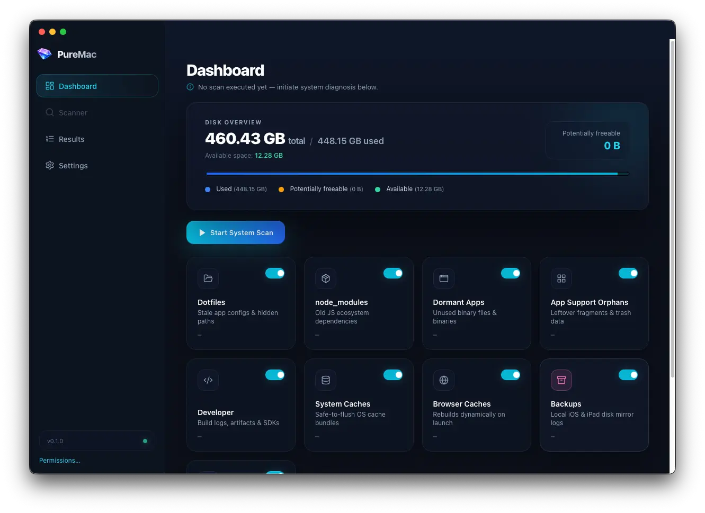

Dashboard clarity
Capacity, used versus free space, and category breakdowns mirror the in-app dashboard so you always start from the big picture.
Made for Apple Silicon & Intel Macs
PureMac is a native desktop app that maps disk usage, runs a structured system scan, and surfaces large or cache-heavy items across your home folder. Review results in a clear dashboard, drill into categories, and remove only what you choose—your data stays on your machine.
Grab the latest signed DMG from
GitHub Releases. Prefer to build yourself? Run
pnpm tauri:build.

macOS makes it surprisingly hard to answer a simple question: where did my disk go? Finder and About This Mac hint at totals, but they do not show which caches, downloads, developer folders, or old projects are responsible. PureMac is a focused companion for that job—offline, understandable, and under your control.
Capacity, used versus free space, and category breakdowns mirror the in-app dashboard so you always start from the big picture.
Launch a scan that walks key locations under your home directory, then review everything in a sortable results view.
Inspect paths, sizes, and risk hints. Nothing is removed until you explicitly confirm—no silent cleaners or cloud uploads.
Built with Tauri (Rust + web UI) so the app stays fast and easy to audit. Grant Full Disk Access only if you want the deepest scan coverage.
The project is free forever and developed in public on github.com/gssisaac/pure-mac. Download the signed disk image for the current version, or build from source if you prefer.